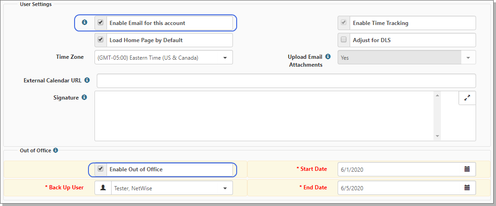

The User Details form opens.
The Back Up User, Start Date, and End Date fields become available.
Sometimes you have to be out of the office, and you need someone to follow up on items that you may be assigned. The Enable Out of Office option allows you to specify a back up user while you are away. The back up user will receive notifications from Dataforms, Org and Activity notifications, Email Template notifications, and the Task Manager. The Out of Office functionality initiates when notifications are sent. Notifications are sent to your
To send notification to the
To enable out of office notifications to the
In the banner bar, the user profile icon turns red during the time you specified Out of Office and displays ZZ, symbolizing that this user is out of the office and unavailable.

To send a notification to an external email mailbox, the recipients must have the option Enable Email for this account enabled. However, if you only want one of the recipients to receive the external email notifications, then you only need to enable the option for one, for example, the primary user.
If you want both the primary and back up user to receive external email notifications, then both must have the option Enable Email for this account enabled. The back up user’s email does not display on the record in the Email Admin dashboard. Instead, when the Send Mail scheduled process runs, it checks the recipients of the unsent email.
To enable out of office to an external Email mailbox:
In the banner bar, the user profile icon turns red during the time you specified Out of Office and displays a ZZ, symbolizing that this user is out of the office and unavailable.
If a system event occurs that sends a notification to you, such as a case or task assigned to you, the notification is forwarded to the user you selected in Back Up User. Both the primary and back up user receive the notifications in their
Let's say that you select John Smith as your Back Up User. When a notification is issued that is meant for you, John Smith receives a
When you return to the office and are ready to disable the out of office function, you can disable the option or allow the expiration to complete, based on the end date.
To disable out of office notifications:
 Watch the video about enabling Out of Office.
Watch the video about enabling Out of Office.
To watch a video about enabling Out of Office, see